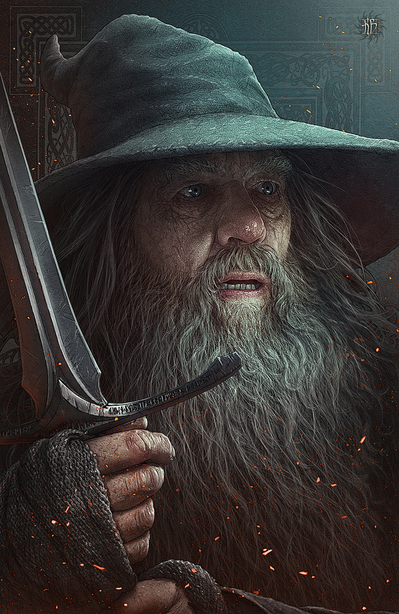

Профиль пользователя

Гендальф Серый
- Телефон: 8-800-555-35-35
- Email: gendalf@yandex.ru
Биография:
Будучи волшебником и хранителем одного из трёх эльфийских колец, Гэндальф обладает огромной силой, но проявляет её не открыто, а, в основном, путём убеждения и воодушевления других. На северо-западе Средиземья он был известен как странствующий волшебник Гэндальф Серый. Его главной целью является противостояние Тёмному Властелину Саурону. Он обладает одним из трёх эльфийских колец — Нарья (Кольцо огня).